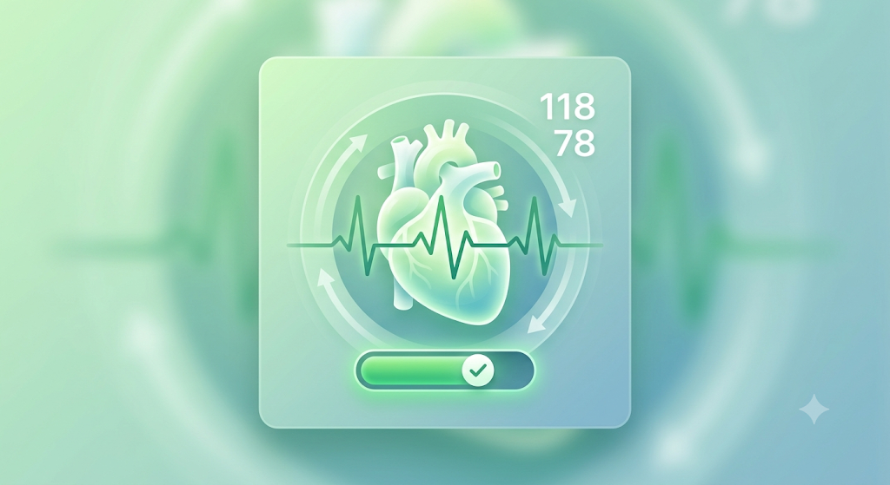
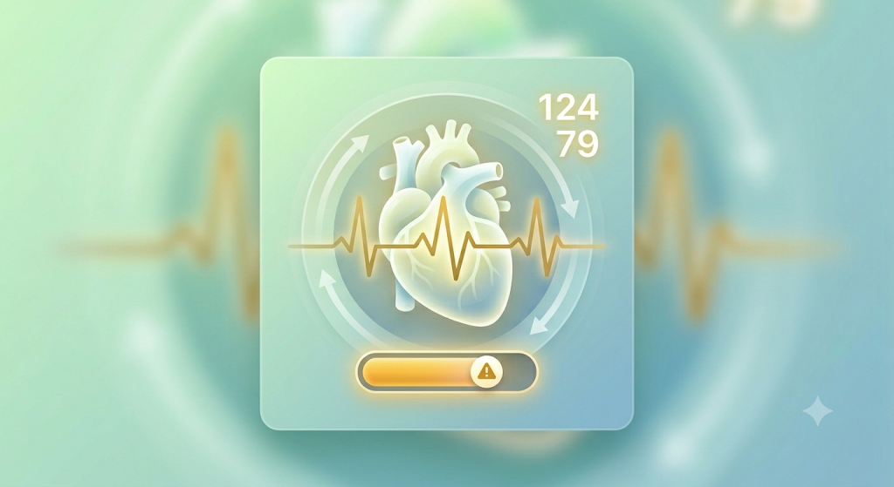
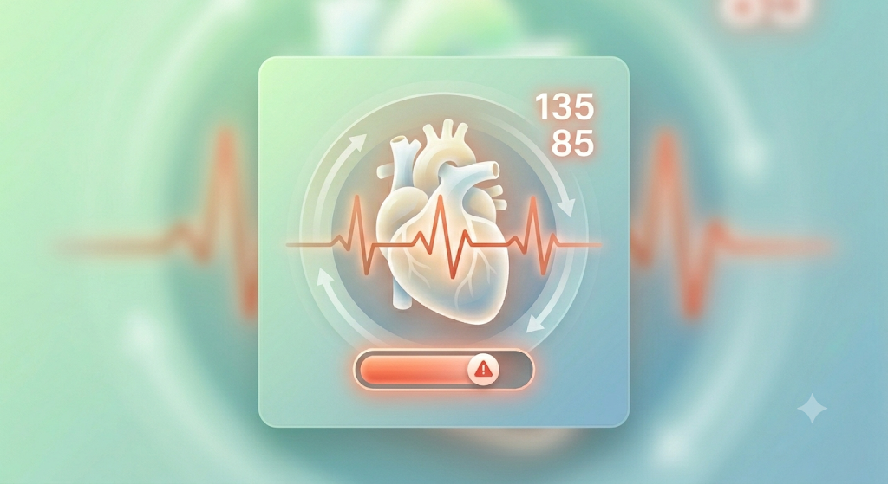
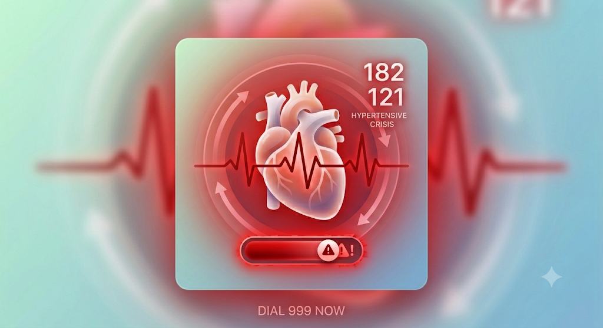

If your Systolic is less than 120 AND Diastolic less than 80.
You are in the optimal range! Keep up the great work with your healthy habits.

If your Systolic is 120 -129 AND Diastolic less than 80.
Your numbers are slightly above normal. This is a great time to focus on a balanced diet and regular exercise to prevent hypertension.

If your Systolic is 130 – 139 OR Diastolic 80 – 89.
You have hypertension. It is highly recommended to consult with a healthcare professional about lifestyle changes or medications.

If your Systolic is 180+ OR Diastolic 120+.
Stop what you are doing and seek emergency medical assistance immediately. Do not wait for your numbers to come down on their own.
